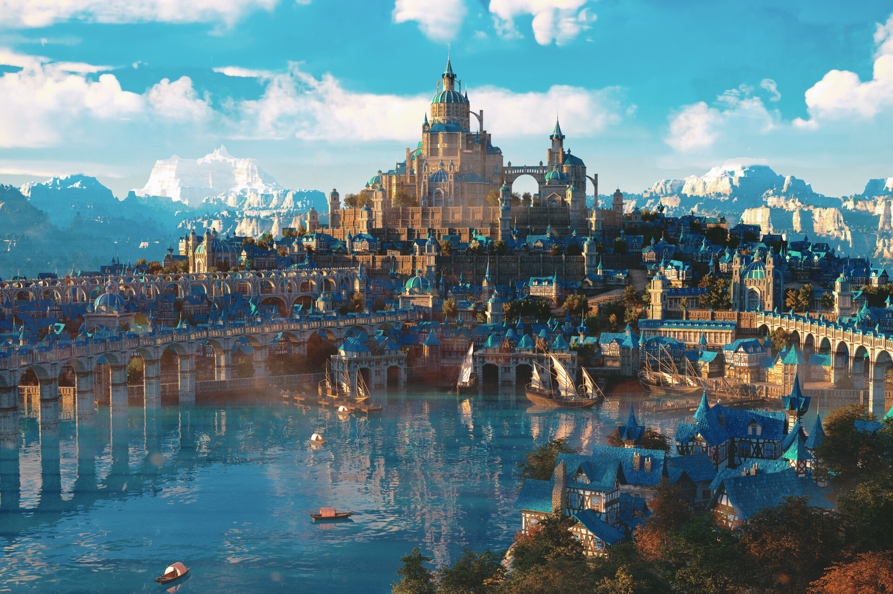

Crystal Spire District
Government District
Home to the Imperial Palace and major government buildings.

Crystal Haven stands as the crown jewel of the empire, its crystalline spires reaching toward the heavens while magical energies pulse through its very foundations. The city is built upon a major convergence of ley lines, making it one of the most magically potent locations in the known world.
Government District
Home to the Imperial Palace and major government buildings.
Academic District
Center of magical learning and research.
Government
Seat of imperial power and heart of the empire.
The central governing body of the empire.